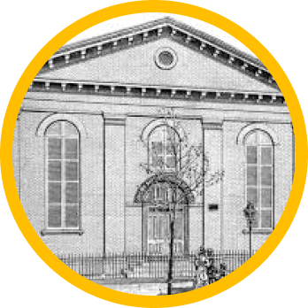
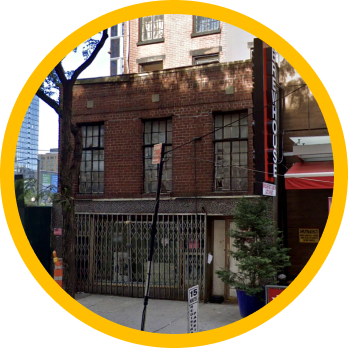

Paths to Power

Brooklyn Girls High School educated generations of young women who would go on to challenge societal norms and fight for civil rights. The school’s alumni were often involved in efforts to improve educational opportunities for Black students, and address the inequities that permeated the education system.
The church was central hub for civil rights activism, hosting community leaders and organizing efforts to combat racial inequality. As one of Brooklyn's most influential Black churches, it provided a platform for rallies, educational initiatives, and voter registration drives, contributing significantly to the fight for social justice.

1467 Bedford Avenue in Brooklyn served as Shirley Chisholm's campaign headquarters during her 1972 presidential run, making it a landmark in her historic bid. The space, once a hub for grassroots political organizing, now hosts local artists as a performance venue, continuing its legacy of community engagement.
Brooklyn College is renowned for its commitment to academic excellence and fostering a diverse, inclusive learning environment. It has long been a hub for political engagement, cultural exchange, and community-driven initiatives.It has been a driver for local activism in Brooklyn.
The Bellrose Ballroom in Brooklyn was a prominent venue for community gatherings, political events, and cultural celebrations during the mid-20th century.It served as a meeting space for activists and organizations advocating for social and economic justice. Shirley used this space for political rallies and press conferences.
PS-22, located in Bedford-Stuyvesant, Brooklyn, was considered a focal point of the struggle for educational equity during the mid-20th century. In the 1950s and 1960s, the school became a symbol of systemic neglect and segregation within New York City's public education system, particularly in predominantly Black neighborhoods like Bedford-Stuyvesant.
